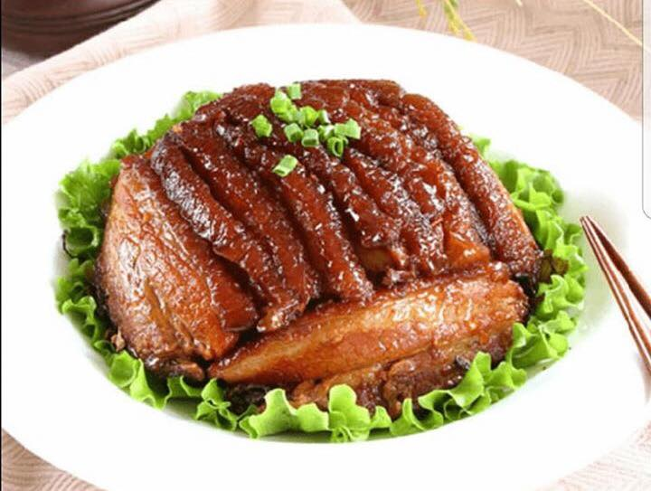
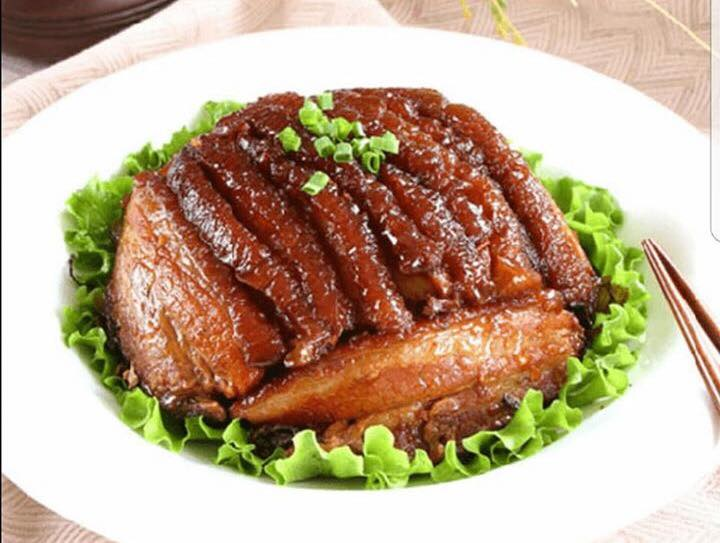

文化


人々は旧正月を非常に重視することが多いため、テトは平和で幸運な新年を祈るために多くの厳粛な儀式や習慣がある機会です。北部の人々が不足しているため、赤とピンクの色の桃の花は幸運をもたらすだけではありません。テトトレイ：北部の人々はテトトレイを非常に重視しており、バンチョン、玉ねぎの漬物、冷凍肉、ボールスープ、温かい竹のシュートスープなどの料理でいっぱいでなければなりません。 五果実トレー：五果実トレーは、緑のバナナ、ブッシュカン、黄色のザボン、オレンジ、タンジェリンの5種類の果実が精巧に展示されており、膨満感と膨満感の5つの要素に代表されます。
旅行


午後遅くのホアンキエム湖（ソードレイク）の壮大な古代の美しさと、ハノイの路上でのミルクの花の強い香りがすぐに思い浮かびます。立冬。それだけでなく、ここの山や森の雄大な美しさは人々を「ただ来たい」とさせるでしょう。カオバンのバンジョーク滝（ベトナム国境のクアイソン川に1つか2つの滝があります-..バンジョーク滝センターには高さ約100 mの白い小川があり、ほこりの層を流れています。ラオカイ県ベトナムの有名な観光地。サパ地区標高1800mで、雲が浮かぶのを眺め、上からサパのパノラマビューを広げます。モクチャウのハート型台湾茶の丘（愛と活力の象徴であるハートは、モクチャウ農場で作られた茶の木に「付けられ」ています。魅力的です）胸の高さで光を放つ同じ形の山々、季節は過ぎ去ります、 2つの山は異なる色を帯びています。
料理

 

ベトナム文明の本拠地である北部料理は、その質素さ、軽さ、そしてワニの果実のマイルドな酸味で、何世代にもわたって慎重に選別されてきました。 料理は相互的で、装飾が多様で、空気のようで繊細な味がします。 封建時代の長期的な定住により、ハノイは北部料理の真髄を維持する場所です。 このハタンの土地の味を、ハノイフォー、ブンチャ、ブンタン、カニ入りビーフンの炒め物、ホーテイシュリンプケーキ、スプリングロール、ヌードル、冷凍肉などの典型的な料理で味わいましょう...ベトナムの食文化。